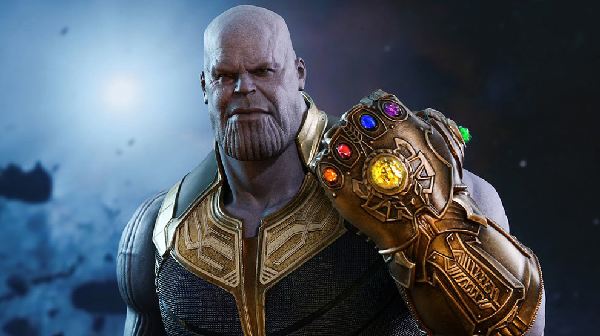

Josh Brolin sebagai Thanos, Thanos adalah karakter fiksi yang ada pada komik Marvel. Karakter ini diciptakan oleh Jim Starlin. Tokoh yang digambarkan sangat kejam dan bengis ini pertama kali muncul pada komik Iron Man Vol 55 yang diterbitkan pada bulan Februari tahun 1973. Thanos merupakan musuh besar dari Marvel yang sulit dikalahkan dan diprediksi akan menjadi musuh Avengers pada film The Avengers Infinity War yang akan dirilis pada tahun 2018 dan 2019 mendatang.
Thanos adalah alien yang dilahirkan sebuah setelit di planet Saturnus bernama Titan. Ia anak dari Eternal Mentor dan Sui-San. Saat Thanos lahir, Sang ibu mencoba untuk membunuhnya karena dirinya lebih cenderung mirip ras sang ayah dari pada ibunya. Thanos memiliki saudara laki-laki bernama Eros (Starfox). Selama hidupnya, Thanos cenderung menyukai aksi kejahatan, terlalu terobsesi dengan kematian dan pemusnahan ras lain. Thanos bahkan memusnahkan keluarganya setelah mendapat hasutan dari Mistress Death.
Abisi Thanos memusnahkan seluruh ras di jagad raya semakin menjadi-jadi setelah dirinya berhasil mengumpulkan Infinity Gems (batu abadi) dan menggabungkan kekuatannya dalam sebuah sarung tangan yang bernama Infinity Gauntlet. Dengan kekuatan tersebut, Thanos bahkan berhasil memusnahkan hampir setengah jumlah ras yang ada di jagad raya. Saat dirinya hendak menghancurkan bumi, aksinya berhasil dihentikan oleh kelompok Avengers dan para penjaga galaksi (Guardians of the Galaxy).
Sebagai penjahat super, Thanos memiliki kekuatan luar biasa. Thanos memiliki kekuatan telekinesis, telepati, dan dapat memanupulasi mahluk lain karena darah ras Titan. Selain itu, Thanos dapat menyerap energi kosmik dengan tangan kosong dan mengkonversikan energi tersebut untuk menyerang lawannya. Thanos juga memiliki sebuah singgasana transportasi. Dengan kursi tersebut, dirinya dapat melewati ruang dan waktu dengan cepat.